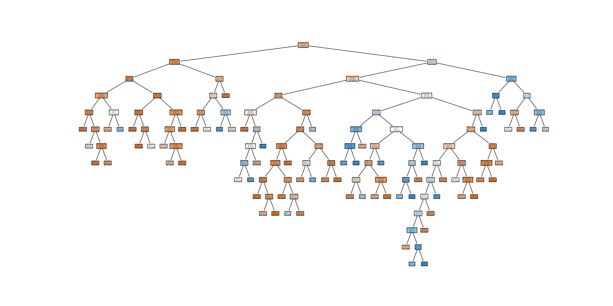

A classification project
The global financial crisis of 2007-2008 highlighted the importance of transparency and strictness in banking. As credit supply is restricted, banks are increasingly tightening their lending systems and turning to machine learning to more accurately identify high-risk loans.
The decision tree model is highly accurate and interpretable, so it is widely used in the banking industry. In many countries, government agencies closely monitor the loan business, so banks need to clearly explain why an applicant’s loan application was rejected or approved. This explainability is also very important for loan applicants, who need to know why their credit rating does not meet the requirements of the bank.
By building an automated credit score model, instant credit approval online can save a lot of labour costs for banks. In this case, we will use the C5.0 decision tree to establish a simple personal credit risk assessment model.
Use the German credit data set on UCI. The data set contains 1,000 loan information, and each loan has 20 independent variables and one class variable to record whether the loan is defaulted. We will use this data set to build a model to predict whether the loan defaults.
First, use the read_csv() function of pandas to read the data.
import pandas as pd
import numpy as np
import matplotlib.pyplot as plt
credit = pd.read_csv("credit.csv")
credit.head(10) checking_balance months_loan_duration ... foreign_worker default
0 < 0 DM 6 ... yes 1
1 1 - 200 DM 48 ... yes 2
2 unknown 12 ... yes 1
3 < 0 DM 42 ... yes 1
4 < 0 DM 24 ... yes 2
5 unknown 36 ... yes 1
6 unknown 24 ... yes 1
7 1 - 200 DM 36 ... yes 1
8 unknown 12 ... yes 1
9 1 - 200 DM 30 ... yes 2
[10 rows x 21 columns]It can be seen that the data set contains 1,000 samples and 21 variables. Variable types include both factor variables and numerical variables. Use the value_counts() function to view the check balance variable check_balance and the savings account balance variable savings_balance.
credit.checking_balance.value_counts()checking_balance
unknown 394
< 0 DM 274
1 - 200 DM 269
> 200 DM 63
Name: count, dtype: int64credit.savings_balance.value_counts()savings_balance
< 100 DM 603
unknown 183
101 - 500 DM 103
501 - 1000 DM 63
> 1000 DM 48
Name: count, dtype: int64The units of the above two variables are Deutsche Mark (DM). Intuitively, the larger the balance of the check and savings account, the less likely the loan default. The loan data set also has some numerical variables, such as months_loan_duration and amount.
credit[["months_loan_duration","amount"]].describe() months_loan_duration amount
count 1000.000000 1000.000000
mean 20.903000 3271.258000
std 12.058814 2822.736876
min 4.000000 250.000000
25% 12.000000 1365.500000
50% 18.000000 2319.500000
75% 24.000000 3972.250000
max 72.000000 18424.000000credit[["months_loan_duration","amount"]].median()months_loan_duration 18.0
amount 2319.5
dtype: float64It can be seen that the loan term is 4~72 months, and the median is 18 months. The loan application amount is between 250 and 18420 marks, and the median is 2320 marks. The variable default indicates whether the loan is defaulted, and it is also the target variable we need to predict. Out of 1,000 loans, 30% of the loan applicants defaulted.
credit.default.value_counts()default
1 700
2 300
Name: count, dtype: int64Banks don’t want to lend to customers with high default rates, because these customers will bring losses to the bank. If the goal of modelling is to identify customers who may default, the number of defaults will never be reduced.
Before formal modelling, we need to divide the data set into two parts: the training set and the test set. Among them, the training set is used to build a decision tree model, and the test set is used to evaluate the performance of the model. We will use 70% of the data as training data and 30% as training data. Before dividing the data, we also need to encode the variables in the form of strings in the data with integers.
col_dicts = {}
cols = ['checking_balance','credit_history', 'purpose', 'savings_balance', 'employment_length', 'personal_status',
'other_debtors','property','installment_plan','housing','job','telephone','foreign_worker']
col_dicts = {'checking_balance': {'1 - 200 DM': 2,
'< 0 DM': 1,
'> 200 DM': 3,
'unknown': 0},
'credit_history': {'critical': 0,
'delayed': 2,
'fully repaid': 3,
'fully repaid this bank': 4,
'repaid': 1},
'employment_length': {'0 - 1 yrs': 1,
'1 - 4 yrs': 2,
'4 - 7 yrs': 3,
'> 7 yrs': 4,
'unemployed': 0},
'foreign_worker': {'no': 1, 'yes': 0},
'housing': {'for free': 1, 'own': 0, 'rent': 2},
'installment_plan': {'bank': 1, 'none': 0, 'stores': 2},
'job': {'mangement self-employed': 3,
'skilled employee': 2,
'unemployed non-resident': 0,
'unskilled resident': 1},
'other_debtors': {'co-applicant': 2, 'guarantor': 1, 'none': 0},
'personal_status': {'divorced male': 2,
'female': 1,
'married male': 3,
'single male': 0},
'property': {'building society savings': 1,
'other': 3,
'real estate': 0,
'unknown/none': 2},
'purpose': {'business': 5,
'car (new)': 3,
'car (used)': 4,
'domestic appliances': 6,
'education': 1,
'furniture': 2,
'others': 8,
'radio/tv': 0,
'repairs': 7,
'retraining': 9},
'savings_balance': {'101 - 500 DM': 2,
'501 - 1000 DM': 3,
'< 100 DM': 1,
'> 1000 DM': 4,
'unknown': 0},
'telephone': {'none': 1, 'yes': 0}}
for col in cols:
credit[col] = credit[col].map(col_dicts[col])
credit.head(10) checking_balance months_loan_duration ... foreign_worker default
0 1 6 ... 0 1
1 2 48 ... 0 2
2 0 12 ... 0 1
3 1 42 ... 0 1
4 1 24 ... 0 2
5 0 36 ... 0 1
6 0 24 ... 0 1
7 2 36 ... 0 1
8 0 12 ... 0 1
9 2 30 ... 0 2
[10 rows x 21 columns]Now, we randomly select 70% of the data set as training data and 30% as test data.
from sklearn.model_selection import train_test_split
y = credit['default']
X = credit.drop('default', axis=1)
X_train, X_test, y_train, y_test = train_test_split(X, y, test_size=0.3, random_state=0)Let’s verify whether the proportion of default loans is close to the training set and the test set.
print (y_train.value_counts()/len(y_train))default
1 0.694286
2 0.305714
Name: count, dtype: float64print (y_test.value_counts()/len(y_test))default
1 0.713333
2 0.286667
Name: count, dtype: float64It can be seen that the proportion of default loans in training sets and test centres is close to 30%.
We will use the DecisionTreeClassifier algorithm in Scikit-learn to train the decision tree model. The DecisionTreeClassifier algorithm is located in the sklearn.tree package. First, import it, and then call the fit method for model training.
from sklearn import tree
from sklearn.tree import DecisionTreeClassifier
credit_model = DecisionTreeClassifier(min_samples_leaf = 6)
credit_model.fit(X_train, y_train)DecisionTreeClassifier(min_samples_leaf=6)In a Jupyter environment, please rerun this cell to show the HTML representation or trust the notebook.
DecisionTreeClassifier(min_samples_leaf=6)
Now, credit_model is the decision tree model we have trained. It can be displayed through visualisation.
import matplotlib.pyplot as plt
fig, ax = plt.subplots(figsize=(20, 10))
tree.plot_tree(credit_model,
feature_names=X_train.columns,
class_names=['no default', 'default'],
filled=True,
rounded=True,
ax=ax)
plt.show() 
In order to apply our trained decision tree model to the test data, we use the predict() function, and the code is as follows:
credit_pred = credit_model.predict(X_test)Now, we have obtained the prediction results of the decision tree model on the test data. The performance of the model can be evaluated by comparing the prediction results with the real results. You can use the classification_report() and confusion_matrix() functions in the sklearn.metrics package to show the model classification results:
from sklearn import metrics
print (metrics.classification_report(y_test, credit_pred)) precision recall f1-score support
1 0.78 0.81 0.80 214
2 0.49 0.44 0.46 86
accuracy 0.71 300
macro avg 0.64 0.63 0.63 300
weighted avg 0.70 0.71 0.70 300print (metrics.confusion_matrix(y_test, credit_pred))[[174 40]
[ 48 38]]print (metrics.accuracy_score(y_test, credit_pred))0.7066666666666667In the 300 loan application test data, the accuracy of the model is 70.7%. Of the 216 non-default loans, the model correctly predicted 81%. Among the 84 defaulted loans, the model correctly predicted 44%. Next, let’s see if the performance of the model can be further improved.
In practical application, the prediction accuracy of the model is not high, and it is difficult to apply it to the real-time credit review process. In this case, if a model predicts all loans as “non-default”, the correct rate of the model will be 72%, and the model is a completely useless model. The correct rate of the model we established in the last section is 70.7%, but the identification performance of defaulted loans is very poor. We can create a cost matrix to define the cost of different mistakes in the model. Assuming that we think that the loss caused to the bank by a loan defaulter is 4 times the loss caused by the bank to miss a non-default loan, the cost weight of non-default and default can be defined as:
class_weights = {1:1, 2:4}
credit_model_cost = DecisionTreeClassifier(max_depth=6,class_weight = class_weights)
credit_model_cost.fit(X_train, y_train)DecisionTreeClassifier(class_weight={1: 1, 2: 4}, max_depth=6)In a Jupyter environment, please rerun this cell to show the HTML representation or trust the notebook. DecisionTreeClassifier(class_weight={1: 1, 2: 4}, max_depth=6)credit_pred_cost = credit_model_cost.predict(X_test)
print (metrics.classification_report(y_test, credit_pred_cost)) precision recall f1-score support
1 0.87 0.48 0.62 214
2 0.39 0.83 0.53 86
accuracy 0.58 300
macro avg 0.63 0.65 0.57 300
weighted avg 0.73 0.58 0.59 300print (metrics.confusion_matrix(y_test, credit_pred_cost))[[102 112]
[ 15 71]]print (metrics.accuracy_score(y_test, credit_pred_cost))0.5766666666666667It can be seen that the overall correctness rate of the model has dropped to 58%, but at this time, the model can correctly identify 72 of the 86 defaulted loans, with a recognition rate of 83%.